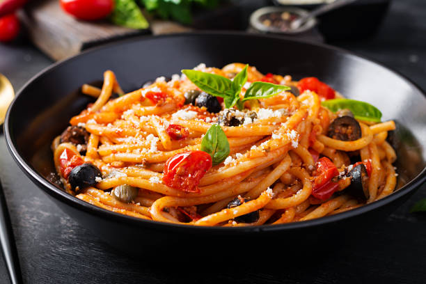

Un viaje de tres tiempos
En SAVIA, cada plato cuenta una historia. Disfrute una experiencia gastronómica que combina ingredientes frescos, creatividad y sabor.

PRIMER TIEMPO
Entrada
Pan de Ajo
Nuestro delicioso pan de Ajo con tomate y un recubrimiento de queso mozzarela derretido
₡1.500

SEGUNDO TIEMPO
Plato fuerte
Pasta
Deliciosa pasta casera con queso y albahaca. Excelente para los amantes de la buena pasta.
₡3.500

TERCER TIEMPO
Postre
Tiramisu
Tiramisu casero con receta propia de la casa.
₡2.000
Una experiencia con propósito
En SAVIA creemos que la gastronomía es una forma de conectar con los ingredientes, disfrutar cada momento y compartir experiencias memorables.